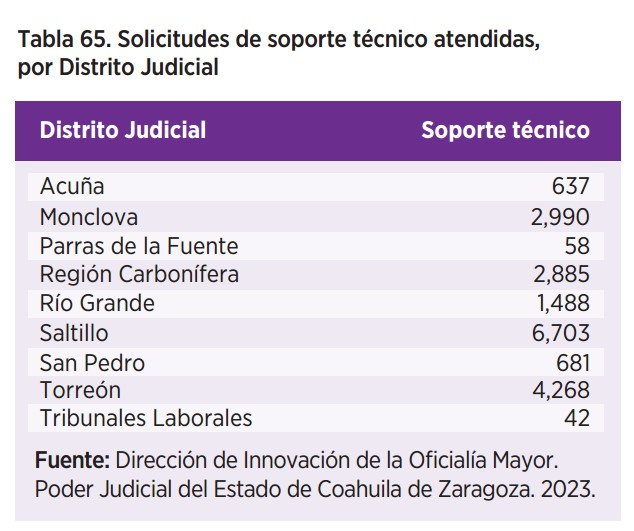

TENEMOS UN SISTEMA DE JUSTICIA DIGITAL COMPLETO Y DE AVANZADA, QUE PERMITE PRESENTAR CUALQUIER DEMANDA O PROMOCIÓN ANTE EL PODER JUDICIAL, CONSULTAR EXPEDIENTES, AGENDAR CITAS Y GENERAR BOLETAS DE NOTIFICACIÓN. TODO ESTO SE PUEDE REALIZAR DE UNA MANERA SENCILLA A TRAVÉS DE UNA COMPUTADORA O DISPOSITIVO MÓVIL

En el Poder Judicial de Coahuila nos encontramos en constante evolución, innovando y aplicando mejoras en nuestros procesos mediante la tecnología. Siempre buscando nuevas formas de estar cerca de la ciudadanía, para que todas y todos tengan acceso a la justicia.
Con la adopción del Nuevo Modelo de Justicia, nos propusimos establecer la justicia digital como un mecanismo para hacer más accesible la impartición de justicia en todos los órganos responsables. Por esa razón, actualizamos nuestros sistemas de gestión a fin de automatizar procesos y ser más eficientes tanto en los procesos judiciales como en las respuestas que la ciudadanía espera de nosotros.
Conformamos un Poder Judicial que apuesta por la consolidación de una política propia para innovar y transparentar el quehacer institucional. A través de nuestro sitio web la ciudadanía puede seguir sin intermediarios todos los casos que nos llegan, usando un buscador de ubicación de expedientes versátil, dando a conocer a las y los usuarios la publicación de las listas de acuerdos de los juzgados, las versiones públicas de las sentencias ejecutoriadas, los edictos, accediendo a información estadística y datos abiertos.
Además, con el objetivo de facilitar y ampliar el acceso a la justicia consolidamos la plataforma Poder en Línea V2, brindando una justicia más pronta y expedita a la ciudadanía.
Con este esfuerzo, en el último año se recibieron y atendieron más demandas iniciales y promociones dirigidas a los juzgados de primera instancia del Poder Judicial por esta vía desde una computadora o dispositivo móvil.
La transformación digital va más allá, en el ámbito penal continuamos con la celebración de audiencias por videoconferencia, garantizando la máxima publicidad.
Para cumplir con nuestra alta encomienda, mantenemos una capacitación y formación permanente del capital humano con el que contamos, a través del Sistema de Capacitaciones y Profesionalización del Poder Judicial (SICAP), mediante el cual facilitamos que decenas de personas usuarias se conecten de forma simultánea a los cursos, talleres y exámenes a distancia.
Seguiremos trabajando para fortalecer las aplicaciones tecnológicas e innovaciones digitales, que ayudan a las buenas prácticas en el desempeño de las labores de nuestro personal, a facilitar la tramitación de nuestros servicios y a crear un puente directo de comunicación con las y los justiciables.
IMPLEMENTACIÓN DEL SISTEMA DE ADMINISTRACIÓN DE JUSTICIA INTELIGENTE (SAJI)
Con la adopción del Nuevo Modelo de Justicia nos propusimos actualizar nuestros sistemas de gestión, automatizar nuestros procesos y ser más eficientes en la atención que la ciudadanía espera.
Por tal motivo, en 2023 nos encargamos de consolidar estos sistemas para fortalecer la seguridad jurídica en los procesos jurisdiccionales y facilitar su funcionamiento.
El Sistema de Administración de Justicia (SAJI) ha sido un pilar fundamental en la gestión eficiente de procesos administrativos, para garantizar una justicia pronta, expedita, innovadora, transparente y abierta.
En ese sentido, para optimizar recursos continuamos con la implementación de la Firma Electrónica, la cual nos ha permitido agilizar y garantizar la autenticidad de documentos legales, proporcionando una capa adicional de seguridad en el intercambio de información judicial. Además, con esta herramienta avanzamos en el cumplimiento de la política de cero papel en el Poder Judicial.
Mientras que, en lo que se refiere al registro de visitas e inspecciones ordinarias, en 2023, registramos 411 actas a lo largo de las diferentes instancias judiciales. Este enfoque proactivo nos ha permitido fortalecer la supervisión judicial, garantizando el cumplimiento de los protocolos y estándares establecidos.
SISTEMAS DE GESTIÓN JUDICIAL
Por medio de los Sistemas de Gestión Judicial PAIIJ y SIGE, implementados en los órganos jurisdiccionales de primera instancia, hemos logrado eficientar y optimizar los procesos judiciales.
En el periodo que se informa, a través de estos sistemas, recibimos 596 mil 379 trámites o documentos y realizamos 670 mil 693 acuerdos.
SITIO WEB
La expansión y mejora de los servicios de justicia mediante las nuevas tecnologías es un compromiso transversal de nuestro Modelo de Justicia, por lo que este año nos esforzamos en que nuestro sitio web sea el punto de encuentro crucial con la sociedad.
Derivado de las acciones emprendidas para consolidar la justicia digital, en el periodo que abarca el presente informe, registramos 1.4 millones de visitas realizadas por 253 mil personas usuarias.
Conscientes de que el mundo digital es cada vez más móvil, nuestro sitio web ha respondido a esta tendencia con un enfoque especial en dispositivos móviles, resaltando que el 57.2 por ciento de las visitas registradas provienen de dichos dispositivos.
Un rubro de trascendencia para la justicia es la promoción de la cultura jurídica. Por esa razón y con la finalidad de educar y divulgar información de una manera clara y sencilla para las niñas, niños y adolescentes del estado, implementamos una nueva sección en el sitio web llamada “Estudiantes”, en la que proporcionamos recursos educativos, material informativo y una visión general de la institución, con la que queremos contribuir a la construcción de una sociedad informada y comprometida, que comprenda el sistema judicial.
Por otra parte, para dotar de accesibilidad a la justicia digital, trabajamos en una serie de actualizaciones, que permiten a las personas usuarias cambiar el tamaño de la letra y ajustar los colores de cualquier sección del sitio web, mejorando así la experiencia para aquellos con diversas necesidades visuales.
Por último, con el objetivo de garantizar la autenticidad de las consultas realizadas en el sitio web, incorporamos las pruebas Captcha, las cuales limitan los accesos no deseados y robots, asegurando la integridad de la información proporcionada.
PLATAFORMA WEB
Trabajamos de manera permanente en la actualización, revisión y validación de los contenidos del sitio web del Poder Judicial del Estado de Coahuila (www.pjecz.gob.mx), lo que nos ha permitido que éste se constituya en un medio de vanguardia que permite mantener informado al público en general.
En 2023, publicamos 16 mil 128 listas de acuerdo, 15 mil 185 sentencias en sus versiones públicas y 11 mil 583 edictos. Además, en la plataforma también se pueden encontrar glosas, peritos, tesis y jurisprudencias, búsqueda y localización de expedientes.
En 2024 continuaremos innovando para ofrecer una experiencia en línea aún más efectiva y centrada en el usuario, consolidando nuestro papel como líderes en la transformación digital dentro del sistema judicial.

SISTEMA INTEGRAL DE CALIDAD Y GESTIÓN DOCUMENTAL (SICGD)
En 2023, se procesaron en la plataforma web de control documental 287 versiones de procedimientos que describen paso a paso las etapas del proceso del servicio que compete a cada una de las dependencias participantes en el Sistema Integral de Calidad y Gestión Documental (SICGD).
En paralelo a lo anterior, con el fin de establecer mecanismos de verificación para demostrar el cumplimiento de los procedimientos previamente descritos, se han procesado en la plataforma web de control documental 150 versiones de formatos que ya están siendo utilizados por las dependencias participantes en el SICGD y que representan la evidencia objetiva que obligan las normas internacionales.
La plataforma web de control documental del SICGD ha estado en una permanente dinámica de revisión y actualización toda vez que, conforme se han liberado los módulos para los usuarios, se encuentran áreas de oportunidad que dan pie a mejoras en la programación y administración de los protocolos y bases de datos.
PODER EN LÍNEA V2
Este año trabajamos en la consolidación de la justicia digital, que nos permite brindar servicios de manera más ágil y sencilla, como citas, envíos de demandas y promociones, visualizaciones del expediente virtual y realización de boletas de notificaciones actuariales. Contribuyendo a un acceso a la justicia más efectivo, sin importar desde donde se realicen.

El sistema Poder en Línea, es un pilar fundamental para el Poder Judicial de Coahuila ya que contribuye en la gestión eficiente de procesos judiciales y en la administración de justicia, evita traslados innecesarios, pérdida de tiempo y hace más inclusivo el acceso a trámites vía remota.
A través de este sistema logramos abordar una amplia gama de necesidades judiciales y la simplificación y optimización en la interacción entre las personas usuarias, así como las y los servidores judiciales.
Seguiremos trabajando para mejorar nuestro sistema hasta lograr una total integración de los servicios del Poder Judicial de Coahuila, para que sea cada vez más amigable para las personas usuarias y ofrecer una atención de calidad a las y los justiciables.
EXPEDIENTE VIRTUAL 2.0
En el presente año, reafirmamos nuestro compromiso de incorporar las nuevas tecnologías en la vida cotidiana de la administración de justicia para facilitar y acelerar trámites que antes demoraban más tiempo.
En ese contexto, mejoramos el servicio de nuestra plataforma donde está alojado el expediente virtual para agilizar las consultas realizadas. En este año, 29 mil 61 expedientes fueron autorizados para su consulta, lo que significó que las y los litigantes no tuvieran necesidad de acudir a las sedes judiciales. Desde la puesta en marcha de esta plataforma, se han autorizado más de 97 mil consultas de expedientes.
BUZÓN ELECTRÓNICO
El Buzón Electrónico permite a la comunidad jurídica tener acceso de manera pronta y expedita a la justicia y que se cumplan las necesidades y exigencias de las instituciones y la sociedad.
Esta herramienta ha permitido a las y los usuarios, presentar de manera electrónica demandas iniciales y promociones dirigidas a los órganos jurisdiccionales de primera instancia del Poder Judicial.


En 2023, recibimos 443 mil 61 demandas iniciales o promociones provenientes de los ocho distritos judiciales.
BOLETAS ELECTRÓNICAS DE GESTIÓN ACTUARIAL (BOLETAS DE NOTIFICACIÓN)
Este año continuamos con la implementación del Sistema de Boletas Electrónicas de Gestión Actuarial (BEGA), herramienta tecnológica que nos ha permitido hacer más eficiente y ágil el trabajo de las y los notificadores, ya que es posible programar las diligencias, notificaciones y emplazamientos requeridos desde un dispositivo móvil o una computadora.
En el periodo que se informa, realizamos ocho mil 874 notificaciones de manera efectiva mediante boleta electrónica, lo que representa una mejor comunicación entre las partes involucradas y una reducción significativa en los tiempos de respuesta, lo que agiliza los procedimientos legales.
SISTEMA DE CAPACITACIONES Y PROFESIONALIZACIÓN DEL PODER JUDICIAL (SICAP)
A fin de contribuir a la capacitación de las personas encargadas de la procuración e impartición de justicia, este año continuamos con la operación del Sistema de Capacitaciones y Profesionalización del Poder Judicial del Estado de Coahuila de Zaragoza (SICAP), el cual nos ha permitido reforzar conocimientos, habilidades y destrezas para el correcto desarrollo de sus funciones.

A la fecha, mediante el SICAP hemos ofertado un total de 36 cursos impartidos por personal del Centro de Medios Alternos de Solución de Controversias, del Instituto de Especialización Judicial, la Unidad de Derechos Humanos e Igualdad de Género y por parte de la Dirección de Innovación de la Oficialía Mayor.
Destaca particularmente que, durante este año mediante el SICAP, aplicamos el Examen de Méritos en todas las materias para magistraturas distritales, juezas, jueces, secretarias, secretarios, notificadoras, notificadores, actuarias y actuarios.
En ese sentido, mediante esta plataforma se recibió la documentación de las personas aspirantes de acuerdo con la convocatoria. Asimismo, se les asignó un proyecto de caso práctico a resolver para los aspirantes a magistraturas, juezas, jueces, secretarias y secretarios; también vinculamos a cada aspirante al examen de aptitudes en una siguiente fase.
SERVICIOS DE SOPORTE TÉCNICO
En el ámbito del uso de tecnologías de la información, las medidas que hemos adoptado nos han permitido trazar un camino orientado al goce real y efectivo de la impartición de justicia.
Con el propósito de aminorar las obsolescencias propias del avance tecnológico, por medio de la Dirección de Innovación, otorgamos el servicio de soporte técnico integral a los distintos órganos jurisdiccionales y unidades administrativas; continuamos con la atención de solicitudes generadas mediante tickets y este año brindamos 19 mil 752 servicios de soporte interno para corregir inconsistencias en el manejo de los sistemas, realizar ajustes preventivos y correctivos en hardware, redes y comunicaciones.


Este año además, realizamos los trabajos de adecuación y configuración en los edificios del Centro de Justicia Civil y Familiar y el Palacio de Justicia en Saltillo, para la restructuración de accesos a red de datos de voz y multimedia, como medida de seguridad (VLAN´S) para las y los usuarios en áreas jurisdiccionales y administrativas.
Finalmente, realizamos trabajos de instalación de cableado estructurado para redes de datos de voz y multimedia, así como red WI-FI en los edificios asignados para la materia laboral en siete distritos judiciales.
EQUIPO DE TRANSMISIÓN PARA LAS SALAS ORALES
Los servicios de administración de justicia se fortalecen con mejor equipamiento tecnológico, por lo que durante 2023 realizamos la instalación del Sistema Integrado de Grabación Audiovisual (SIGA) en 40 salas de audiencias orales en distintos distritos judiciales para las materias familiar, penal, civil y laboral. Además, realizamos el mantenimiento preventivo en las salas ya instaladas.


EQUIPO DE TRANSMISIÓN PARA LAS SALAS COLEGIADAS
Nuestro objetivo es fomentar el uso y aprovechamiento de los sistemas tecnológicos que hemos desarrollado, por tal motivo, realizamos las labores de mantenimiento preventivo y correctivo en el equipo de transmisión que se encuentra instalado en las salas de sesiones del Pleno del Tribunal Superior de Justicia, así como las Salas Colegiadas en Materia Civil y Familiar, Penal y la Sala Regional.
ADQUISICIÓN DE EQUIPOS DE CÓMPUTO
Como resultado de una estrategia integral en la mejora de servicios y el fortalecimiento de los procesos de gestión judicial, este año continuamos con la renovación de equipos de cómputo para personal de las áreas jurisdiccionales, no jurisdiccionales y unidades administrativas de todos los distritos judiciales.


Esta renovación de infraestructura tecnológica es fundamental para dotar al personal del equipo técnico adecuado, suficiente y necesario debido al avance constante de la tecnología. Por lo que durante este año realizamos la adquisición, configuración y asignación de 850 equipos de cómputo, los cuales ofrecen mayor velocidad de procesamiento, capacidad de memoria y almacenamiento necesarios para la ejecución de tareas y procesos realizados por el personal del Poder Judicial, con ello, no habrá ningún ordenador en operación con antigüedad mayor a cinco años.